Shape families¶
Shapes, colors, and classes¶
Shapes are drawn on a gray canvas at random positions, sizes, and rotations, in three colors (red, green, blue). The shape vocabulary has four families: four geometric shapes (square, rectangle, triangle, circle), twelve animal silhouettes (duck, elephant, giraffe, fish, rabbit, camel, eagle, penguin, whale, kangaroo, flamingo, crocodile — see Animal shapes), seven symbol shapes (kite, trapezoid, house, arrow, cross, teardrop, anchor — see Symbol shapes), and twenty-six letter stroke figures (a–z — see Letter shapes). Only the geometric four are drawn unless you opt in.
Shape reference¶
A field-guide-style lookup of every shape and its plain axis-aligned detection box (blue), upright at its own authored orientation exactly as drawn — not sampled from the generator, so no random color, rotation, or asymmetry_jitter. Every symbol and animal is authored mirror-symmetric about its own vertical axis, so this is what keeps a reference recognizable: an arrow pointing up, a house with its roof up, a kite on its long axis. The blue box here is the detection box at this fixed reference position — and since the oriented box (see Tasks) is derived in the shape's own upright frame, it is also exactly what the OBB task exports at this unrotated pose; the generator's rotated samples carry the same box turned rigidly with the shape. Animals, symbols, and letters also show their keypoint schema (dots and skeleton) in orange, matching the animated previews' occluded-keypoint color.
| Reference | Shape | Details |
|---|---|---|
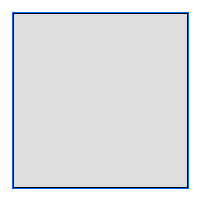 |
square |
Axis-aligned, 4-fold symmetric — under rotation its OBB stays axis-aligned too. |
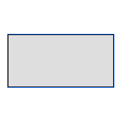 |
rectangle |
Non-square — under rotation its OBB carries real orientation. |
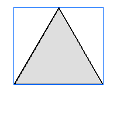 |
triangle |
Equilateral, apex up — 3-fold rotationally symmetric, so the silhouette alone reads the same every 120 degrees. |
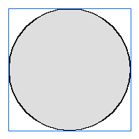 |
circle |
Rotation-invariant — its OBB collapses to the axis-aligned box at every angle. |
| Reference | Shape | Details |
|---|---|---|
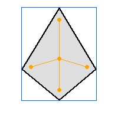 |
kite |
Diamond with unequal top/bottom diagonals — convex. |
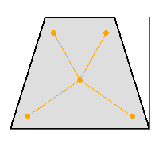 |
trapezoid |
Isosceles trapezoid, short side up — convex. |
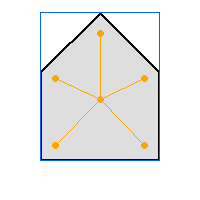 |
house |
Square body with a triangular roof — convex. |
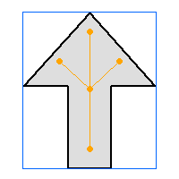 |
arrow |
Up-pointing arrow with two barbs — concave. |
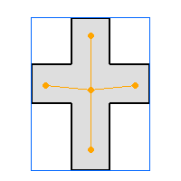 |
cross |
Latin cross, lower arm longer — concave. |
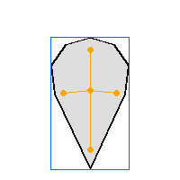 |
teardrop |
Round top tapering to a bottom point — convex. |
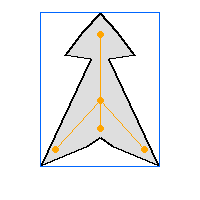 |
anchor |
Ring, stock, shaft, and two flukes — concave. |
| Reference | Shape | Details |
|---|---|---|
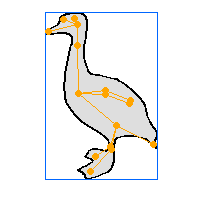 |
duck |
upright-bird |
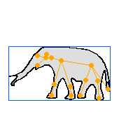 |
elephant |
bulky-quadruped |
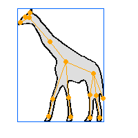 |
giraffe |
tall-thin |
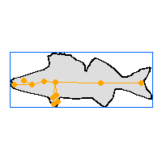 |
fish |
streamlined |
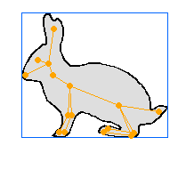 |
rabbit |
compact-eared |
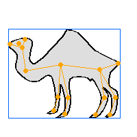 |
camel |
bulky-quadruped-humped |
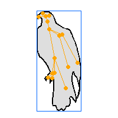 |
eagle |
upright-bird |
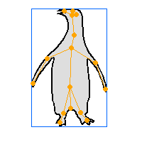 |
penguin |
upright-bird |
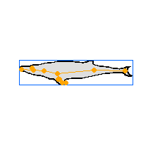 |
whale |
streamlined-aquatic-large |
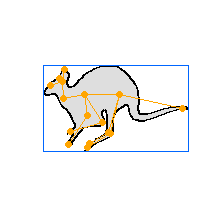 |
kangaroo |
hopping-marsupial |
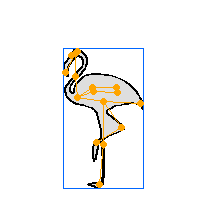 |
flamingo |
long-legged-wader |
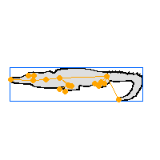 |
crocodile |
sprawling-reptile |
| Reference | Shape | Details |
|---|---|---|
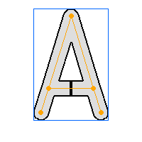 |
a |
5 strokes — lambda legs + crossbar |
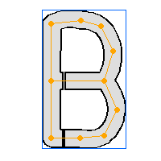 |
b |
11 strokes — two bowls off a stem |
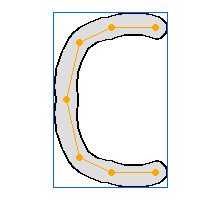 |
c |
6 strokes — open ring |
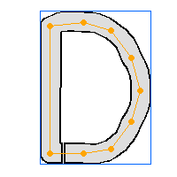 |
d |
9 strokes — one bowl off a stem |
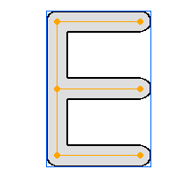 |
e |
5 strokes — three bars off a stem |
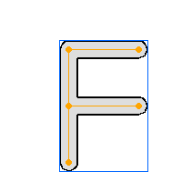 |
f |
4 strokes — two bars off a stem |
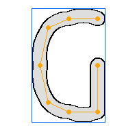 |
g |
7 strokes — open ring with an inward hook |
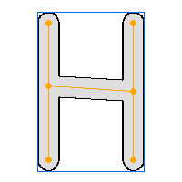 |
h |
5 strokes — two verticals + crossbar |
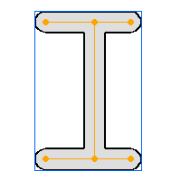 |
i |
5 strokes — I-beam, even serifs |
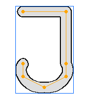 |
j |
6 strokes — barred stem with a round hook |
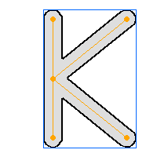 |
k |
4 strokes — spine + two diagonals |
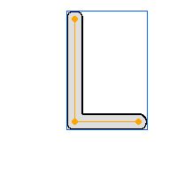 |
l |
2 strokes — spine + base bar |
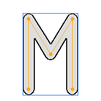 |
m |
4 strokes — two verticals + inner V |
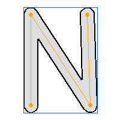 |
n |
3 strokes — two verticals + diagonal |
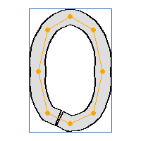 |
o |
8 strokes — closed oval ring |
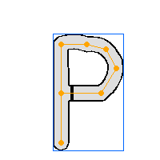 |
p |
7 strokes — one upper bowl off a stem |
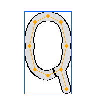 |
q |
9 strokes — oval ring + descending tail |
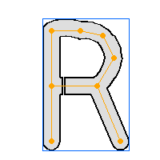 |
r |
8 strokes — upper bowl + leg off a stem |
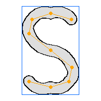 |
s |
8 strokes — upright figure-eight |
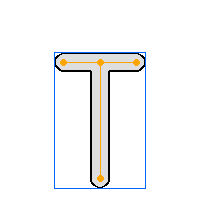 |
t |
3 strokes — top bar + stem |
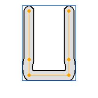 |
u |
5 strokes — open-top bowl |
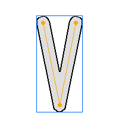 |
v |
2 strokes — narrow diagonal pair |
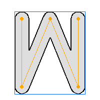 |
w |
4 strokes — double V |
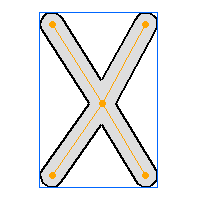 |
x |
4 strokes — center + 4 corners |
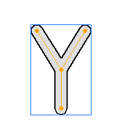 |
y |
3 strokes — V + stem |
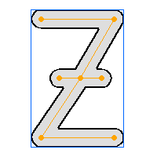 |
z |
6 strokes — bar-diagonal-bar, crossed |
Nine letters (b, d, h, i, n, o, s, x, z) have one node deliberately placed off the default grid, because their regular block form would be exactly invariant under a 180-degree rotation — see Letter shapes.
Each reference is scaled independently to the largest size that keeps its own outline inside the frame, so a thin shape (the triangle) and a tall one (the giraffe) each fill their own frame rather than sharing one scale sized for the largest shape. Regenerate these with python examples/render_shape_reference.py (writes into docs/assets/shape-references/, one <prefix><shape>.png file per shape; --families symbols to regenerate just one family).
class_mode selects how object classes are derived:
class_mode |
Classes |
|---|---|
shape |
all 49 shape names, in vocabulary order |
color |
red, green, blue |
shape_color |
Cartesian product, e.g. red_square (147 classes) |
The table above lists the full vocabulary; a run narrows it to its own shapes. Both the declared classes and the ids stamped on annotations narrow together, so a giraffes-only run declares one class and numbers it 0 — every dataset is internally consistent, and every annotation's id resolves against the categories (COCO) or names (YOLO) block written beside it. The flip side is that an id means different things in differently-scoped runs, so compare two datasets by class name, never by raw id. The color mode is the exception that never narrows: no run restricts the color axis of the vocabulary, so red/green/blue keep ids 0/1/2 everywhere.
rectangle (non-square) plus a random per-shape rotation give oriented boxes real orientation; a circle is rotation-invariant, so its OBB collapses to the axis-aligned box. Every animal silhouette is asymmetric, so all twelve carry orientation — and so does every symbol and every letter; three of the seven symbols (arrow, cross, anchor) are concave, so their segmentation polygon carries shape information any box alone does not — every letter is concave too, one connected outline wrapped around its own keypoint skeleton rather than a hand-authored polygon (see Letter shapes).
Animal shapes¶
Pass shapes= (or the CLI's --shapes animals) to draw the twelve animal silhouettes instead of the four geometric shapes. Each outline is asymmetric and traced from a CC0 or Public Domain Mark reference silhouette rather than hand-guessed, so every shape stays recognizable and carries real orientation under rotation. Each ships as an editable SVG under fuse_augmentations/data/zoo/<animal>.svg — open it in any vector editor or browser to inspect the outline, the keypoints, and the zoo:-namespaced provenance attributes (origin, license, attribution).
| Shape | Archetype |
|---|---|
duck |
upright-bird |
elephant |
bulky-quadruped |
giraffe |
tall-thin |
fish |
streamlined |
rabbit |
compact-eared |
camel |
bulky-quadruped-humped |
eagle |
upright-bird |
penguin |
upright-bird |
whale |
streamlined-aquatic-large |
kangaroo |
hopping-marsupial |
flamingo |
long-legged-wader |
crocodile |
sprawling-reptile |
Selecting animals¶
Name the members explicitly, or take the first N of them with tuple(AnimalShape):
from fuse_augmentations.data.animals import AnimalShape
from fuse_augmentations.data.config import SyntheticConfig, Task
explicit = SyntheticConfig(
task=Task.KEYPOINTS, shapes=(AnimalShape.DUCK, AnimalShape.GIRAFFE)
) # explicit
assert explicit.shapes == (AnimalShape.DUCK, AnimalShape.GIRAFFE)
first_four = SyntheticConfig(
task=Task.KEYPOINTS, shapes=tuple(AnimalShape)[:4]
) # duck, elephant, giraffe, fish
assert first_four.shapes == (
AnimalShape.DUCK,
AnimalShape.ELEPHANT,
AnimalShape.GIRAFFE,
AnimalShape.FISH,
) # same 4 species every call, per the declaration-order guarantee below
all_animals = SyntheticConfig(
task=Task.KEYPOINTS, shapes=tuple(AnimalShape)
) # all twelve
assert len(all_animals.shapes) == 12
Slicing tuple(AnimalShape) takes a prefix of the declaration order, so the same n names the same species on every call — a thirteenth animal could only extend the tail of that list. shapes itself is a plain tuple[Shape, ...] — where Shape is the base class every family's enum derives from, re-exported from data.families — so tuple(SymbolShape) and tuple(LetterShape) work identically for the other two keypoint-bearing families (see Symbol shapes and Letter shapes).
All four tasks work on animal shapes; keypoints is available for the animal, symbol, and letter families — not the geometric shapes, which have no keypoint tables:
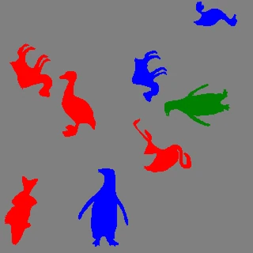

Regenerate these clips with python examples/animate_synthetic_dataset.py --shapes animals --task all.
Symbol shapes¶
Pass shapes= (or the CLI's --shapes symbols) to draw seven analytic 2D symbols instead of the four geometric shapes. Unlike the animals, these are computed from formulas rather than traced from source art — there is no artwork to attribute — but each is still asymmetric enough to keep a real orientation under rotation, and each is drawn mirror-symmetric about its own vertical axis (see Symbol keypoint schema).
| Shape | Outline | Convex? |
|---|---|---|
kite |
diamond with unequal top/bottom diagonals | yes |
trapezoid |
isosceles trapezoid, short side up | yes |
house |
square body with a triangular roof | yes |
arrow |
up-pointing arrow with two barbs | no |
cross |
Latin cross, lower arm longer | no |
teardrop |
round top tapering to a bottom point | yes |
anchor |
ring, stock, shaft, and two flukes | no |
There is no plain-triangle symbol: it would collide in name with the geometric family's triangle for a shape this family does not need to keep. arrow, cross, and anchor are concave, so their segmentation polygon carries real shape information a box does not.
Selecting symbols¶
tuple(SymbolShape) mirrors tuple(AnimalShape) — name the members explicitly, or take a stable prefix:
from fuse_augmentations.data.config import SyntheticConfig, Task
from fuse_augmentations.data.symbols import SymbolShape
explicit = SyntheticConfig(
task=Task.KEYPOINTS, shapes=(SymbolShape.KITE, SymbolShape.ANCHOR)
) # explicit
assert explicit.shapes == (SymbolShape.KITE, SymbolShape.ANCHOR)
first_three = SyntheticConfig(
task=Task.KEYPOINTS, shapes=tuple(SymbolShape)[:3]
) # kite, trapezoid, house
assert first_three.shapes == (
SymbolShape.KITE,
SymbolShape.TRAPEZOID,
SymbolShape.HOUSE,
)
all_symbols = SyntheticConfig(
task=Task.KEYPOINTS, shapes=tuple(SymbolShape)
) # all seven
assert len(all_symbols.shapes) == 7
A dataset can draw from the animal family, the symbol family, or the letter family under keypoints, but never more than one at once — see Symbol keypoint schema and Letter keypoint schema for why.
Regenerate these clips with python examples/animate_synthetic_dataset.py --shapes symbols --task all.
Letter shapes¶
Pass shapes= (or the CLI's --shapes letters) to draw twenty-six capital-letter figures (a–z) instead of the four geometric shapes. Like every other family, a letter is one filled outline polygon — but unlike the hand-authored outlines of symbols/animals, it is derived. Each letter is authored the way you would sketch one, as a set of keypoints and the edges between them, and the drawable shape is produced by wrapping that skeleton in a pen stroke of constant width.
Authoring skeleton-first is what makes the landmarks trustworthy. Because the polygon is the set of points within half a stroke width of the skeleton, every keypoint and every edge between two keypoints lies strictly inside the letter, with half a stroke width of clearance — a keypoint can never land on the boundary or outside the ink, and a skeleton edge can never cut across empty space. Joining a letter's keypoints in skeleton order therefore sketches that letter through its own fill.
Every stroke tip is capped with a semicircle and every convex corner rounded, so no letter has a sharp point anywhere on it; only the concave side of a turn stays angular, where the two strokes' bodies already cover the corner and rounding it would bulge the outline outward across the inside of the turn.
An edge may itself be a shallow circular arc rather than a straight segment, which is what makes o/c/g/s's bowls read as bowls instead of octagons; letters with no curve in a block face (a e f h i k l m n t v w x y z) stay straight throughout. How deep an arc may go is bounded by the promise above rather than by taste: the annotated skeleton joins two keypoints with a straight line, so an edge bowed far enough for its own chord to leave the stroke is rejected when the asset loads, as is a curved edge that a counter opens on.
Seven letters (a, b, d, o, p, q, r) have an enclosed counter. A single polygon ring cannot hold a true hole, so the graph edge that closes each counter's loop is split into two flat-capped stubs separated by a hairline before wrapping — that opens the loop while leaving a slit far too thin to read as a gap, keeping the counter intact (o's hole, a's crossbar pocket) inside one simple, non-self-intersecting ring. Where the slit goes is a letterform decision: a bowl hung off a stem (b, d, p, r) breaks on the edge leaving that stem and as near it as fits, so the bowl reads as a curve just touching a vertical line, while a free-standing ring breaks along its bottom — left of centre for o, bottom-right for q beside where its tail joins. That hairline is the single place in the whole family where a skeleton edge leaves the fill.
The 15 named keypoint slots give every letter the same landmark vocabulary (a fixed count per dataset is a hard requirement of both annotation formats), and their default coordinates form a regular 3-column x 5-row grid — but a letter is free to place any of its own nodes anywhere, which is what shapes b/d/p/q/r's bowls, o's oval, and q's outward tail. Nine letters (b, d, h, i, n, o, s, x, z) also use that freedom to break an exact 180-degree rotational symmetry their regular block form would otherwise carry — the same "look the same upside down" set real handwriting has, and the same kind of fix SymbolShape.KITE's unequal diagonal lengths already make for the symbol family. See the Letters tab above for every letter's stroke count.
Selecting letters¶
tuple(LetterShape) mirrors tuple(AnimalShape)/tuple(SymbolShape) — name the members explicitly, or take a stable prefix:
from fuse_augmentations.data.config import SyntheticConfig, Task
from fuse_augmentations.data.letters import LetterShape
explicit = SyntheticConfig(
task=Task.KEYPOINTS, shapes=(LetterShape.X, LetterShape.O)
) # explicit
assert explicit.shapes == (LetterShape.X, LetterShape.O)
first_three = SyntheticConfig(
task=Task.KEYPOINTS, shapes=tuple(LetterShape)[:3]
) # a, b, c
assert first_three.shapes == (
LetterShape.A,
LetterShape.B,
LetterShape.C,
)
all_letters = SyntheticConfig(
task=Task.KEYPOINTS, shapes=tuple(LetterShape)
) # all twenty-six
assert len(all_letters.shapes) == 26
All four tasks work on letter shapes, and every output format behaves exactly as it does for the other three families — one segmentation ring per COCO annotation, one flat coordinate ring per YOLO-seg row — since a letter is a single polygon like any other shape by the time it reaches a writer.
Regenerate these clips with python examples/animate_synthetic_dataset.py --shapes letters --task all.
Every clip on this page shows its whole family: the generator picks each object's shape uniformly, so a family preview would otherwise be a lucky subset — twenty-six letters need roughly a hundred drawn objects between them before the last one turns up. Each vocabulary therefore sets its own object count and clip length, and the script then walks its seed forward until the stream it renders really does contain every member, printing the seed it settled on.